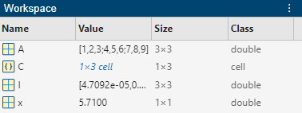
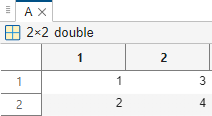
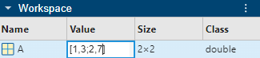

Create and Edit Variables
Create Variables
The MATLAB® workspace consists of the variables you create and store in memory during a MATLAB session. You can create new variables in the workspace by running MATLAB code or using existing variables.
To create a new variable, enter the variable name in the Command Window, followed
by an equal sign (=) and the value you want to assign to the
variable. For example, if you run these statements, MATLAB adds four variables to the workspace.
x = 5.71;
A = [1 2 3; 4 5 6; 7 8 9];
I = besseli(x,A);
C = {A A A};You do not have to declare variables before assigning values to them.
If you do not end the assignment statement with a semicolon
(;), MATLAB displays the result in the Command Window. The Workspace panel
displays the result of assigning a scalar value to a variable.
x = 5.71
x =
5.7100If you do not explicitly assign the output of a statement to a variable,
MATLAB generally assigns the result to the reserved word
ans. The value of ans changes with every
statement that returns an output value that is not assigned to a variable. For
example, call a function and do not assign the output to a variable.
sin(1)
ans =
0.8415View Workspace Contents
To view a list of variables in your base workspace, use the Workspace panel. For example, open the
Workspace panel using the workspace function and display the
name, value, size, and class of variables in your
workspace.
workspace

You also can use the who command in the Command Window
to view a list of variables. To list information about size and class, use the
whos command. For example, use the
who and whos commands to view your
workspace
contents.
who
Your variables are: A C I x
whos
Name Size Bytes Class Attributes A 3x3 72 double C 1x3 576 cell I 3x3 72 double x 1x1 8 double
View Variable Contents
You can view the contents of a variable by entering the variable name at the command prompt. For example, view the contents of a scalar variable.
x
x =
5.7100You can also view the contents of a variable in the Variables editor. For example, open a
matrix in the Variables editor using the openvar function and
view the contents of the
matrix.
openvar A
Edit Variable Contents
You can edit the contents of scalar and small vector or matrix variables in the Workspace panel. Click the variable value to select it, and then enter a new value to overwrite the existing value. You can also press Enter to edit the existing value. For example, change the value of an element in a small matrix using the Workspace panel.

To edit the contents of other kinds of variables, use the Variables editor. For example, change the value of an element in a table variable using the Variables editor.

You can also navigate, resize, or visualize data and generate code using the Variables editor. For information about other editing actions, see Variables editor.
See Also
Variables Editor | Workspace Panel